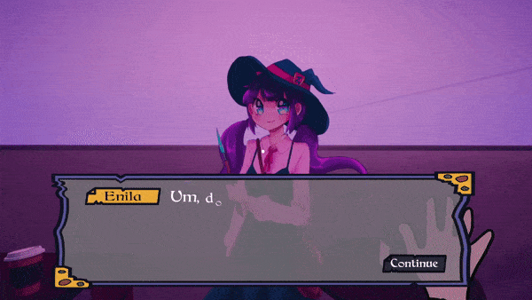
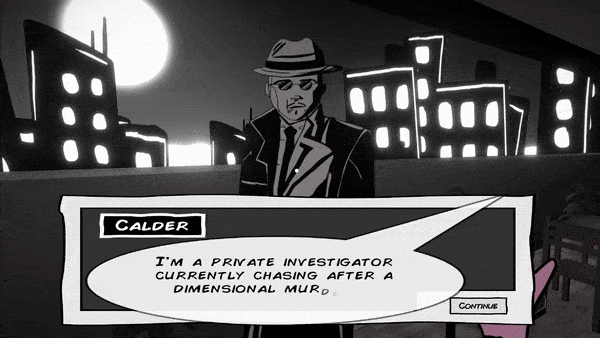
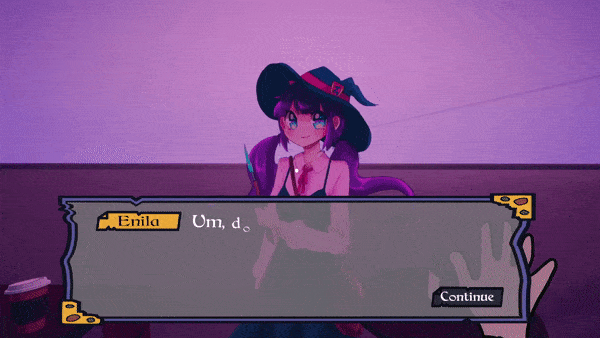
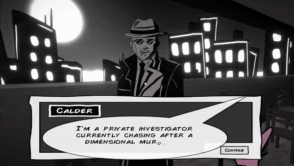
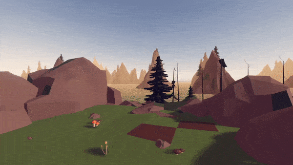
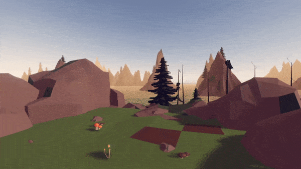
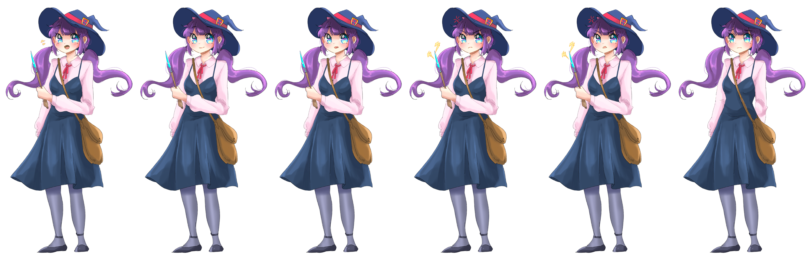

The player has lost both their home and their memories. While working at the cafe, the player talks with the customers and helps them through their troubles, slowly learns about their own past, and works toward reconstructing their lost home world. Through multiple flashbacks and talking with your companion Jett, you learn that there is a seed capable of creating a new dimension–your old home. The goal of the game is to grow the seed by recieving items from talking to different characters that come to the cafe.
Throughout the game, you recieve records that you can place in the jukebox to transport you into different dimensions, ultimitely getting more customers to the cafe.


The player has lost both their home and their memories. While working at the cafe, the player talks with the customers and helps them through their troubles, slowly learns about their own past, and works toward reconstructing their lost home world. Through multiple flashbacks and talking with your companion Jett, you learn that there is a seed capable of creating a new dimension–your old home. The goal of the game is to grow the seed by recieving items from talking to different characters that come to the cafe.
 



Throughout your adventure, you talk with different characters from different dimensions and help them solve their problems. There are multiple options and routes you are able to choose, and having a better outcome for an NPC’s story gives you a better item. Make drinks for the characters in order to improve your relationship with them!
There are also flashbacks that the player goes through to uncover more about their past.


Once you recieve an item from each NPC character, you are able to feed the seed and finally create your home dimension. Depending on how well you do, there are different endings and dimensions that you can unlock.
 

I acted as the main programmer for the game and implimented a lot of the gameplay features. Some of the things I worked on are the branching dialogue system, text and UI animations, overall game loop system, and the flashback system. Initially we had such a large scope for the project, and branching dialogue needs a lot of systems to get it to work.


Additionally, I also created several sprites for the game like the one below. In the dialogue system, characters can have different sprite emotions during dialogue, so all of the characters need sprites for all emotions.
